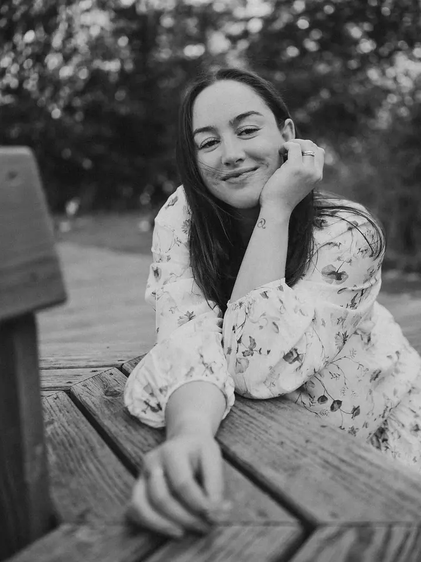
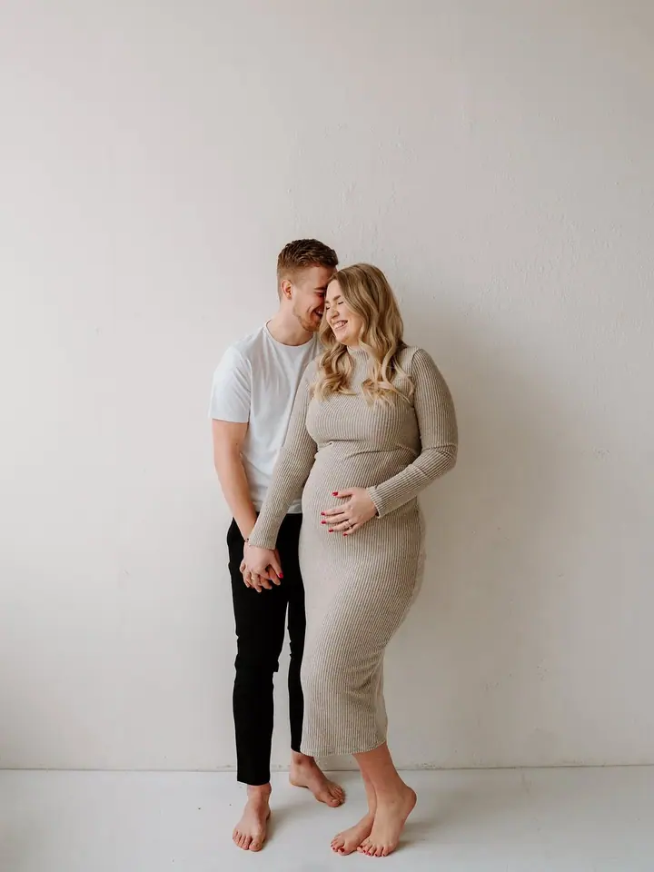

Svatby
Celý den od ranních příprav až po večerní oslavu, s emocemi i detaily, které by vám jinak mohly uniknout. Fotky dostanete nejpozději do 4 týdnů po svatbě.




Jmenuji se Kateřina, ale klidně mi říkejte Káťa. Autenticky fotím svatby, páry i rodiny, přirozeně, bez tlaku a bez strojených póz. Společně vytvoříme fotky, ke kterým se budete rádi vracet.
Více o mně
„Focení by mělo být stejně přirozené jako chvíle, které zachycuje.“
— Kateřina Havlová
Celý den od ranních příprav až po večerní oslavu, s emocemi i detaily, které by vám jinak mohly uniknout. Fotky dostanete nejpozději do 4 týdnů po svatbě.
Uvidíme se venku, u vás doma nebo v ateliéru. Nečekejte strojené pózy ani nucené úsměvy, spíš procházku a společný čas, a to i s dětmi, které zrovna nemají svůj den.
Procházka ve dvou v přírodě, v centru města nebo na místě, které máte rádi. Focením vás nenásilně provedu, takže pózovat umět nemusíte.
Těhotenské focení venku nebo ve světlém pražském ateliéru. Když už je miminko na světě, ráda za vámi přijedu domů.
Jsem rodinná a svatební fotografka z Chomutova, kousek od Krušných hor, kde fotím nejčastěji. Stejně často jsem ale i v Praze a ráda za vámi přijedu domů, na vaši zahradu nebo na místo, které máte rádi. Je mi 29 let, v duši pořád 19.
Jsem máma dvou dětí a mateřství mi dalo jednu superschopnost: nekonečnou trpělivost a umění provést focením i děti, které zrovna nemají svůj den. Půjdeme na procházku, budeme si povídat a já vás celým focením nenásilně provedu. S většinou klientů jsme dnes už přátelé a moc si toho vážím.
Miluju všechno, co focení obnáší: samotné focení, editaci i vaši zpětnou vazbu. O editaci a focení s láskou tvořím také podcast Dneska edituju. Fotím na Sony, piju lungo, nejradši mám jaro a ze svatebního dne nejvíc přípravy.

Pošlete mi pár řádků nebo vyplňte svatební formulář. Pošlu vám nabídku a společně vybereme balíček, který vám bude sedět.
Domluvíme místo i termín a poradím vám s oblečením. U svatby se měsíc nebo dva předem potkáme u kafe a projdeme harmonogram.
Žádné strojené pózy, spíš procházka a společný čas. Na svatbě zapadnu mezi hosty a jsem vám i oporou.
Fotky z rodinného a párového focení máte do 2 týdnů, ze svatby nejpozději do 4 týdnů, v online galerii barevně i černobíle.
Jsem z Chomutova a často fotím v Krušných horách, ale stejně tak bývám i v Praze. Nejčastěji fotím v přírodě, ráda ale přijedu i k vám domů. Pro chladnější dny a vánoční focení využívám pražské ateliéry s velkými okny.
Balíček Váš výběr stojí 4 000 Kč a obsahuje 25 upravených fotografií, každá další je za 150 Kč. Balíček V mé režii za 5 000 Kč obsahuje neomezený počet fotek, minimálně 40. Mimo Chomutov si účtuji cestovné 6 Kč/km.
Vůbec ne, nervozita před objektivem je úplně normální. Celým focením vás provedu tak, abyste se cítili uvolněně a sami sebou.
Zálohu vybírám jen u svatebního focení, a to při podpisu smlouvy. Teprve pak je termín váš.
info@havlovakaterina.cz
Chomutov · Krušné hory · Praha